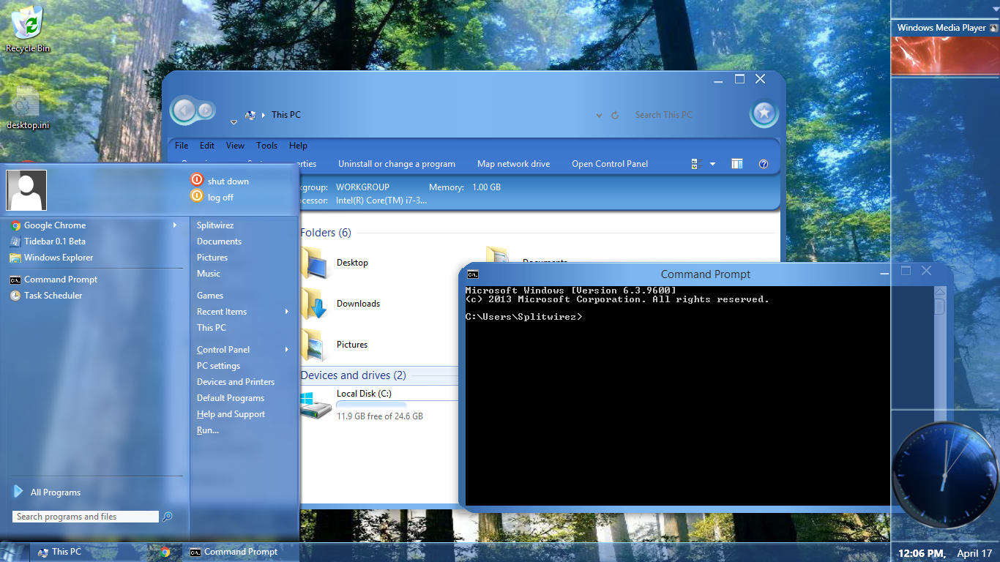

Jcee wrote:
Windows default behavior when the start menu is on the side is to make it overlap the taskbar; hence the option to push it to the side
Windows default behavior when the start menu is on the top/bottom is not to overlap the taskbar; it would make sense that unchecking the same setting would cause it to.. behave the same regardless of taskbar position. HOWEVER matching windows defaults was considered a higher priority
However If changed it from a checkbox, to a list-box with 3 options: (Overlap, Dont overlap, System Default) the inconsistency that is windows default could be maintained. (but that is/was more work)
Hmm...that does make sense. If it's a huge fight to add, I can live without it, but it would certaintly be nice to have the option. One case I see myself using it in is to create a more noticeable version of this effect:

for the visual style I've been working on, Plexcellent. Currently, I'm
really close to achieving a similar look using Classic Shell:

and this feature would just be the cherry on the Sundae :U
(I'm sure there are other usage cases, I'm just trying to say that this is one where it'd make a HUGE difference)